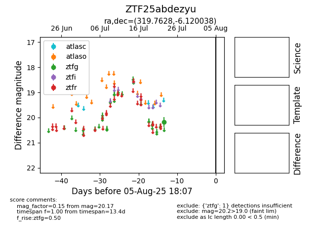

Target ZTF25abdezyu at 2025-08-05 18:07, see:
FINK: fink-portal.org/ZTF25abdezyu
Lasair: lasair-ztf.lsst.ac.uk/objects/ZTF25abdezyu
ALeRCE: alerce.online/object/ZTF25abdezyu
alt names
ZTF25abdezyu (ztf,fink)
coordinates:
equatorial (ra, dec) = (319.7628,-6.12004)
galactic (l, b) = (45.5069,-35.44879)
photometry
last ztfg=20.17
1 ztfg detections
